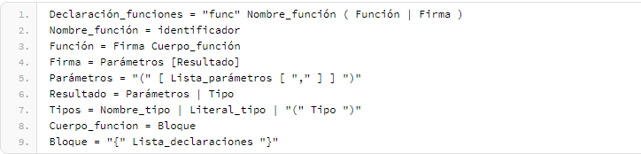
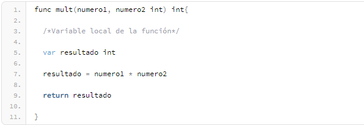
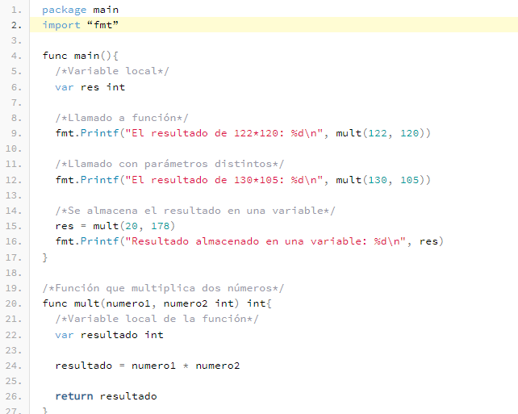
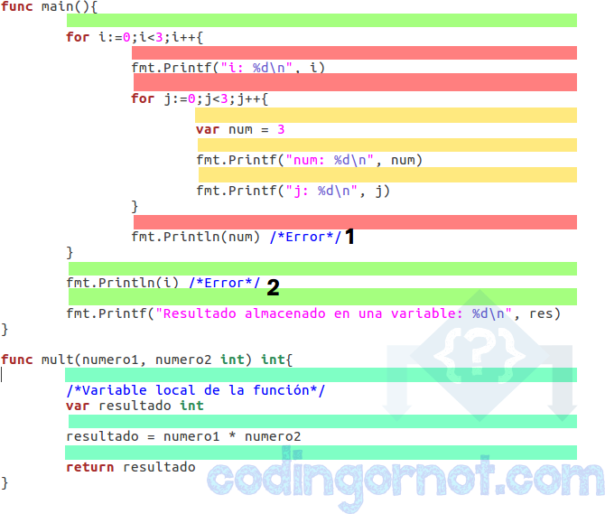

Funciones en Go
Una función o subrutina es una sección de código que realiza una tarea en específico. Todos los programas cuentan con, al menos, una función main (principal) con la posibilidad de definir más funciones para realizar subtareas. Todas las funciones se diferencian entre ellas, y de las variables, por medio de un identificador único.
La sintaxis de la declaración de funciones en Go es la siguiente

En base a lo anterior:
- "func" es la palabra reservada que inicia la declaración de una función.
- "Firma" es la lista de parametros
- "Nombre_funcion" es el identificador de nuestra función
- "Parámetros" son los valores que se pasan a una función para trabajar dentro de ella. Puede haber cualquier cantidad de parámetros, o ninguno.
- "Tipo" es la lista de resultados que devuelve una función por medio de un return. Puede haber cualquier cantidad de resultados, o ninguno. El número de ellos debe coincidir con los devueltos por la sentencia return en cantidad y tipo.
- "Cuerpo_función" contiene las instrucciones de la función. Si se especificó un resultado, en esta sección debe de colocarse un return con los correspondientes datos a regresar.
Ejemplo de una funcion
La siguiente función ha sido llamada "mult" y recibe 2 parametros de tipo entero (numero1 y numero2) y su tarea es multiplicar estos dos numeros y devolver el resultado

Llamado de una función
Para hacer un llamado a función, se utiliza el identificador de la función (nombre) y se pasan los parámetros necesarios. Si la función regresa algún valor, este puede ser almacenado en variables.
Ejemplo

Ambito de una variable en Go
En el ejemplo anterior se utilizó un concepto nuevo: variables locales. Una variable local es aquella a la que solamente se puede acceder desde ciertas partes de nuestros programas. Regularmente a esta característica de los lenguajes de programación se le conoce como ámbito.
El ámbito se refiere a una región del programa en la que una variable existe. En la imagen a continuación se puede ver como se utilizarn colores distintos para diferenciar ambitos distintos

- Las variables del ámbito marcado con verde encima de el pueden ser vistos y consultados por los ámbitos marcados con amarillo y rojo
- Por otro lado, las variables de los ámbitos marcados con amarillo y rojo no pueden ser consultados por el verde
- Las variables del ámbito rojo se pueden acceder desde el ámbito amarillo.
- Las variables del ámbito amarillo no pueden accederse a ellas desde el ámbito rojo
- Las variables del ámbito marcado en cian/verde aqua no pueden consultarse desde ningun otro ambito y viceversa
- Las partes marcadas con los números 1 y 2 marcan dos sentencias que son erróneas ya que intentan acceder a variables de un ámbito al que no pueden hacerlo
Las variables pueden ser declaradas en 3 lugares diferentes
- Dentro de una función o bloque de código. En este caso las variables creadas son conocidas como variables locales, y por ende solamente se puede acceder a ellas dentro del ámbito al que pertenecen y tambien desde otros internos a él.
- Fuera de todas las funciones existentes. En este caso se les conoce como variables globales y por ende se puede acceder a ellas desde cualquier parte del programa.
- Por ultimo, en la definición de una función. Se les conoce como parámetros formales y solamente se puede acceder a ellas desde la función en la que se declaran.